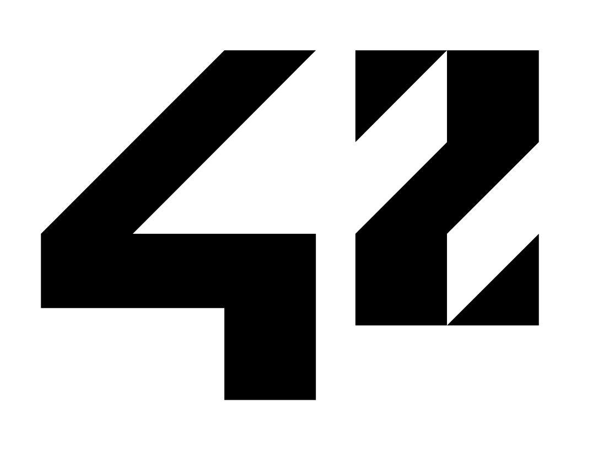

Webserv by BB & JN
Liens de tests généraux
Utiliser server2.conf
Redirection gérée par le serveur
Redirection gérée par le serveur avec sub-links
Liens de tests CGI
Utiliser server2.conf
Afficher les variables d'environnement via php-cgi
Afficher une image via php-cgi